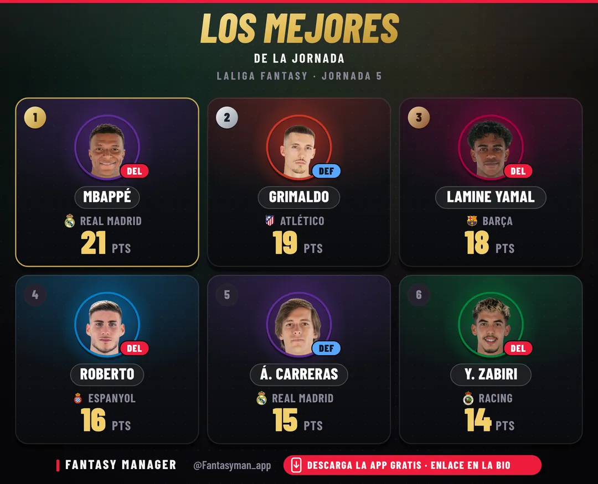

Resumen de la jornada 5
Del viernes 11 de septiembre al lunes 14 de septiembre · puntos oficiales con los de DAZN, a lunes 16 de noviembre a las 22:42
Los mejores de la jornada
| # | Jugador | Pts | Media |
|---|---|---|---|
| 1 | 21 | 12,3 | |
| 2 | 19 | 7,9 | |
| 3 | 18 | 13,1 | |
| 4 | 16 | 5 | |
| 5 | 15 | 2,4 | |
| 6 | 14 | 9,8 | |
| 7 | 14 | 6,5 | |
| 8 | 14 | 6 | |
| 9 | 14 | 5,1 | |
| 10 | 14 | 5 |
Al lado de los puntos de la jornada, la media de cada uno en la temporada.
Once ideal de la jornada 5
Lo que ya se jugó, no una recomendación. Cómo se elige.

Resultados y MVP de cada partido
 Sevilla1-0Valencia
Sevilla1-0Valencia vie 11, 21:00
vie 11, 21:00 MVP: Juan Iglesias 13
MVP: Juan Iglesias 13 Racing2-1Alavés
Racing2-1Alavés sáb 12, 14:00
sáb 12, 14:00 MVP: Y. Zabiri 14
MVP: Y. Zabiri 14 Osasuna0-2Espanyol
Osasuna0-2Espanyol sáb 12, 16:15
sáb 12, 16:15 MVP: Roberto 16
MVP: Roberto 16 Athletic1-1Elche
Athletic1-1Elche sáb 12, 18:30
sáb 12, 18:30 MVP: Buonanotte 11
MVP: Buonanotte 11 Real Madrid4-1Rayo
Real Madrid4-1Rayo sáb 12, 21:00
sáb 12, 21:00 MVP: Mbappé 21
MVP: Mbappé 21 Celta1-1Málaga
Celta1-1Málaga dom 13, 14:00
dom 13, 14:00 MVP: Ferran Jutglà 12
MVP: Ferran Jutglà 12 Levante2-4Barça
Levante2-4Barça dom 13, 16:15
dom 13, 16:15 MVP: Lamine Yamal 18
MVP: Lamine Yamal 18 Getafe1-1Deportivo
Getafe1-1Deportivo dom 13, 18:30
dom 13, 18:30 MVP: R. Terrats 14
MVP: R. Terrats 14 Real Sociedad0-3Atlético
Real Sociedad0-3Atlético dom 13, 21:00
dom 13, 21:00 MVP: Grimaldo 19
MVP: Grimaldo 19 Villarreal1-2Betis
Villarreal1-2Betis lun 14, 21:00
lun 14, 21:00 MVP: Natan 14
MVP: Natan 14
Los que doblaron su media
| Jugador | Pts | Media |
|---|---|---|
| 13 | 4 | |
| 16 | 5 | |
| 12 | 3,8 | |
| 10 | 3,4 | |
| 13 | 4,5 | |
| 11 | 3,9 |
6 sacaron el doble de su media o más, con 10 puntos o más; el que más se pasó, Dmitrovic: 13 con 4 de media.
Los peores de la jornada
| Jugador | Pts | Media |
|---|---|---|
| -4 | 2,8 | |
| -4 | 1,5 | |
| -2 | 1,8 | |
| -2 | 4,1 | |
| -2 | 2,5 | |
| -1 | 4,8 |
6 terminaron restando puntos.
Los equipos que más puntos dieron
Los que más
| Equipo | Pts |
|---|---|
| 120 | |
| 120 | |
| 120 | |
| 109 | |
| 100 |
Los que menos
| Equipo | Pts |
|---|---|
| 23 | |
| 25 | |
| 34 |
La semana del mercado
Del 8 de septiembre al 10 de septiembre hubo 2 cambios de mercado entre la jornada 4 y el cierre de cláusulas de la 5. Quien comprara a Aubameyang al empezar la semana ganó 5,6 M antes del cierre. En el otro lado, Mikautadze perdió 2,8 M. Contando la subida y los 12 puntos que hizo (a 100 mil por punto), nadie salió tan rentable como Aubameyang: 6,8 M.
Ganaron
| Jugador | Semana |
|---|---|
| +5,6 M | |
| +4,9 M | |
| +3,7 M | |
| +3,6 M | |
| +3,4 M |
Perdieron
| Jugador | Semana |
|---|---|
| -2,8 M | |
| -2,7 M | |
| -2,4 M | |
| -2,2 M | |
| -2,1 M |
Negocio
| Jugador | Subida + puntos |
|---|---|
| 6,8 M | |
| 5,2 M | |
| 5 M | |
| 4,7 M | |
| 4,1 M |
Valor al primer cambio de mercado tras la jornada 4 frente al último antes del cierre. Cómo se mueve el valor, en valor de mercado.
La jornada 5, en corto
10 partidos entre el viernes 11 de septiembre y el lunes 14 de septiembre, con 29 goles. Hubo goleada: Real Madrid 4-1 Rayo.
El que más puntos sacó fue Mbappé (Real Madrid), con 21. La sorpresa, Dmitrovic: 13 puntos cuando su media es de 4.
Con los mejores de cada línea en un 4-3-3 salen 170 puntos. El Atlético fue el equipo que más puntos repartió (120); el Levante, el que menos (23). 6 jugadores acabaron en negativo; el peor, Lejeune con -4.
Puntos oficiales de LaLiga Fantasy, con los de DAZN. Cómo hacemos el resumen.